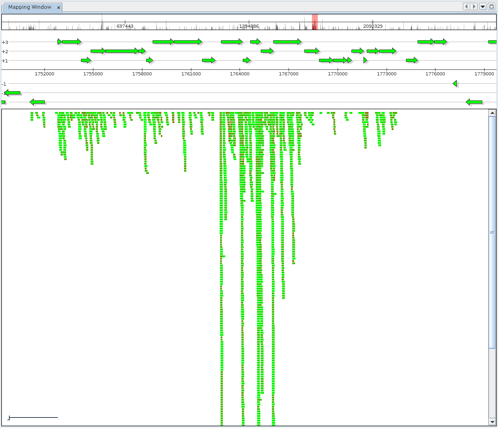

Next: Search Up: Reference mapping Previous: Importing reference genomes Contents
|

|

|
Alignment of metagenome or metatranscriptome data to reference sequences of known origin allows researchers to evaluate relative identity between metagenome sequences and the actual strain or to obtain an overview of gene expression within a meta-transcriptome. MGX currently provides predefined pipelines employing BLAST [Altschul et al., 1990], FR-HIT [Niu et al., 2011] and Bowtie 2 [Langmead and Salzberg, 2012]. The reference mapping component is provided to inspect and browse alignment results, offering both a generic alignment view where each mapped sequence is colored according to mapping identity, as well as a fragment recruitment view. Switching between view modes is possible from the context menu of the mapping component.
Sebastian Jaenicke, 2024-02-18